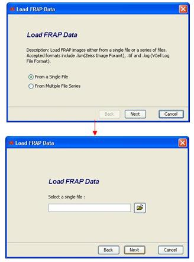

The first step of FRAP data analysis is to load raw experimental data. The data can be loaded either from a single file or a file series. It is displayed in the image viewer after loaded successfully.
-
Loading data from a single file
Click on the Load Frap Data
button  , a "Load
Frap Data" wizard is popped up. Follow the wizard page choose "From a
single file". In the next page, click on
button to
start an open file dialog to load data from a single file. Choose the
file path and select the appropriate format. FRAP data can be loaded
from different sources. Figure 3-2 shows how to load a single file from
"Load Frap Data" wizard and Figure 3-3 shows the open file dialog.
Virtual FRAP is able to load following files.
, a "Load
Frap Data" wizard is popped up. Follow the wizard page choose "From a
single file". In the next page, click on
button to
start an open file dialog to load data from a single file. Choose the
file path and select the appropriate format. FRAP data can be loaded
from different sources. Figure 3-2 shows how to load a single file from
"Load Frap Data" wizard and Figure 3-3 shows the open file dialog.
Virtual FRAP is able to load following files.
1. Images - More than 50 image file types are supported in Virtual Frap by using Bio-Formats library (detailed information about supported image file types can be found in http://www.loci.wisc.edu/ome/formats.html). Zeiss lsm and TIFF image formats are both available in “Files of Type”. To load image types other than “.lsm” and “.tif”, users need to choose “All Files” as file type.
2. Virtual Cell Simulation Log files - VCell simulation result data are retrievable from a “.log” file. By opening the VCell log file and selecting a specific variable, the spatial results will be loaded as initial FRAP data. To see the log files, users need to choose “All Files” as file type.

Figure 3-2 Loading a Single File in "Load FRAP Data" Wizard

Figure 3-3 Opening a Single File Dialog in Virtual FRAP
-
Loading data from file series
Click on the Load Frap
Data button
to open
the "Load Frap Data" wizard. On the first wizard page choose "From
Multiple File Series ". In the next page, a file series input dialog is
showed up to load file series (e.g. a time series of FRAP experiment
images). Users have to specify the time interval between images for the
time series data. The “Choose Files” button will lead users to an open
file dialog which allows users to select multiple files. The file types
are the same image file types supported by Bio-Formats as mentioned
above. Figure 3-4 shows how to load multiple files from "Load Frap Data"
wizard and Figure 3-5 shows the dialog to open multiple files.

Figure 3-4 Loading Multiple Files in "Load FRAP Data" Wizard

Figure 3-5 Opening Multiple Files Dialog in Virtual FRAP
-
Adjusting FRAP image data
In the Virtual FRAP image viewer, there are buttons provide basic image processing functions, which enable users to have a detailed look at the data. The functions are described below.
Zoom in – Clicking on
the zoom in button
 will make
the image one size bigger with each click.
will make
the image one size bigger with each click.
Zoom out – Clicking
on the zoom out button
 will make
the image one size smaller with each click.
will make
the image one size smaller with each click.
Increase contrast –
Clicking on the increase contrast button
 will make
the image contrast one unit bigger with each click.
will make
the image contrast one unit bigger with each click.
Reduce contrast – Clicking on the reduce contrast button
 will make
the image contrast one unit smaller with each click.
will make
the image contrast one unit smaller with each click.